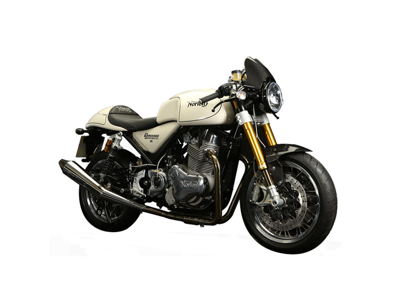
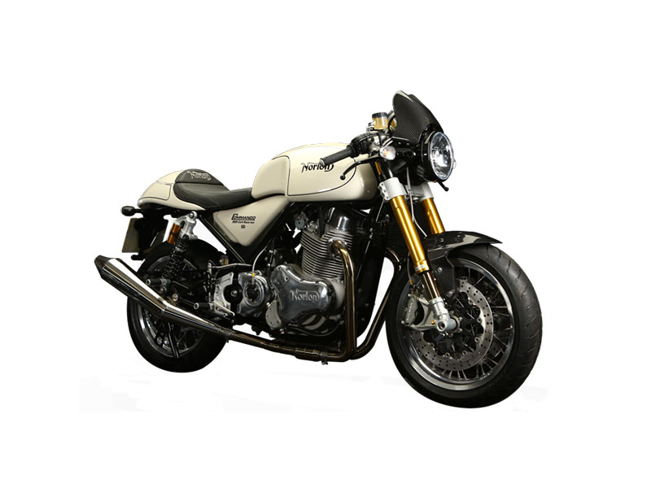

Triumph
Triumph es una de las marcas más antiguas y famosas del Reino Unido, conocida por modelos icónicos como la Bonneville.

Norton
Norton es reconocida por sus motos potentes y elegantes, como la Norton Commando.
Triumph es una de las marcas más antiguas y famosas del Reino Unido, conocida por modelos icónicos como la Bonneville.
Norton es reconocida por sus motos potentes y elegantes, como la Norton Commando.
